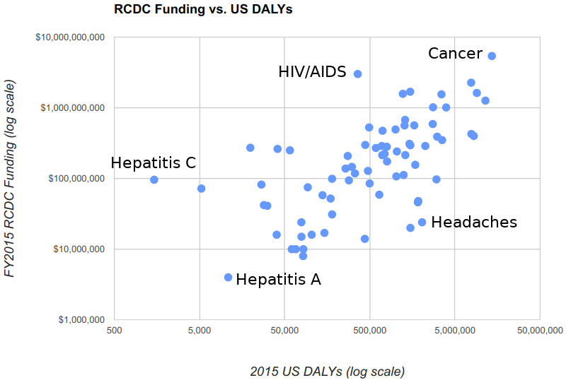

My last few stories have been negative, so I thought I would do a positive one. The National Institute of Health (NIH) is the biggest funder of research on disease. And it seems to be doing a good job.
We want the NIH to help cure the worse diseases. The good way to measure the damage done by a disease is the DALY, or Disability-Adjusted Life Years.
A “life year” is a year of life lost. So, if a car crash kills someone at 29, when they were expected to live to 79, they lost 50 life years.
The “disability adjusted” in DALYs means that sickness and disability are converted into life years, so that we can have a single number. So, if a disease causes you to go blind, each year of blindness might be accounted as 0.6 life years. I admit that this kind of accounting is revolting and morbid, but but it simplifies everything to a single number. (And courts make a similar decision when they decide how much money to award for causing blindness vs. killing someone.)
The DALY is a way to measure how harmful a disease is to our country. And it seems the NIH is doing a good job of spending research money on the most harmful diseases.
 Image source: https://report.nih.gov/info_disease_burden.aspx
Cancer currently causes the most DALYs worth of harm and it gets the most funding. Hepatitis A does relatively little harm and gets much less funding.
I don’t expect the graph of DALYs vs. research funding to form a straight line. That would mean we only assign research funding based on harm. Research money should go where there is likely to be a breakthrough that reduces that harm. For example, a new medicine has become available to treat Hepititis C — some call it “a cure” — but it is expensive. The NIH might have devoted extra research money into finding a cheaper version of the drug or how to cost-effectively use this new medicine. For the disease of “headaches”, the researchers might not expect a breakthrough that helps all headaches, so it may get less funding.
This data looks like good news: government research funding is being spent on important diseases. And it’s a sizable amount of money. The NIH’s budget was $27 billion in 2018, or $81 for each American, each year.